Publications
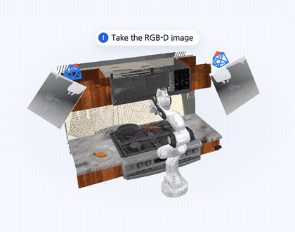
Byungkun Lee*, Dongyoon Hwang*, Dongjin Kim, Hojoon Lee, Minho Park, Jaegul Choo. (* Equal contribution)
Preprint'26.
project page / arXiv
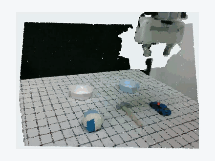
Dongyoon Hwang*, Byungkun Lee*, Dongjin Kim, Hyojin Jang, Hoiyeong Jin, Jueun Mun, Minho Park, Hojoon Lee, Hyunseung Kim, Jaegul Choo. (* Equal contribution)
IROS'26.
project page / arXiv / code / HF models
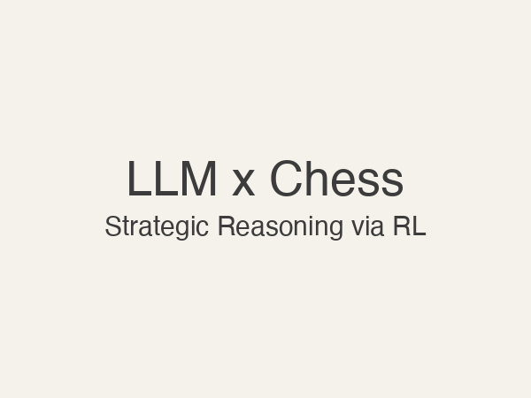
Dongyoon Hwang*, Hojoon Lee*, Jaegul Choo, Dongmin Park, Jongho Park. (* Equal contribution)
CoLM'25, SCALR Workshop.
arXiv
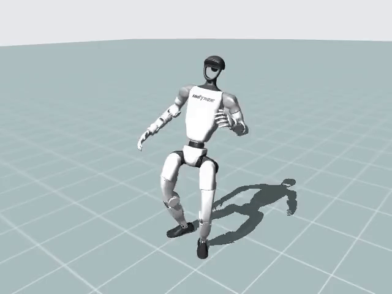
Kyungmin Lee*, Sibeen Kim*, Minho Park, Hyunseung Kim, Dongyoon Hwang, Hojoon Lee, Jaegul Choo. (* Equal contribution)
Preprint'25.
project page / arXiv / code
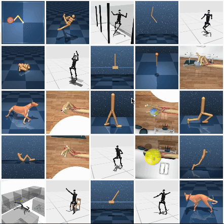
Hojoon Lee*, Dongyoon Hwang*, Donghu Kim, Hyunseung Kim, Jun Jet Tai, Kaushik Subramanian, Peter R. Wurman, Jaegul Choo, Peter Stone, Takuma Seno. (* Equal contribution)
ICLR'25, Spotlight (top 5%).
project page / arXiv / code
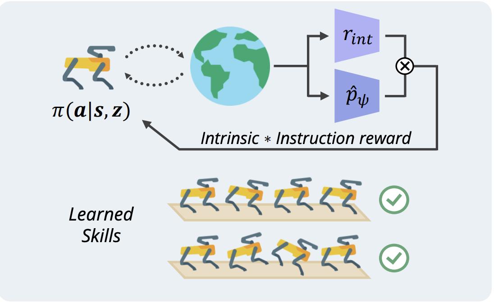
Hyunseung Kim, Byungkun Lee, Hojoon Lee, Dongyoon Hwang, Donghu Kim, Jaegul Choo.
NeurIPS'24.
project page / arXiv
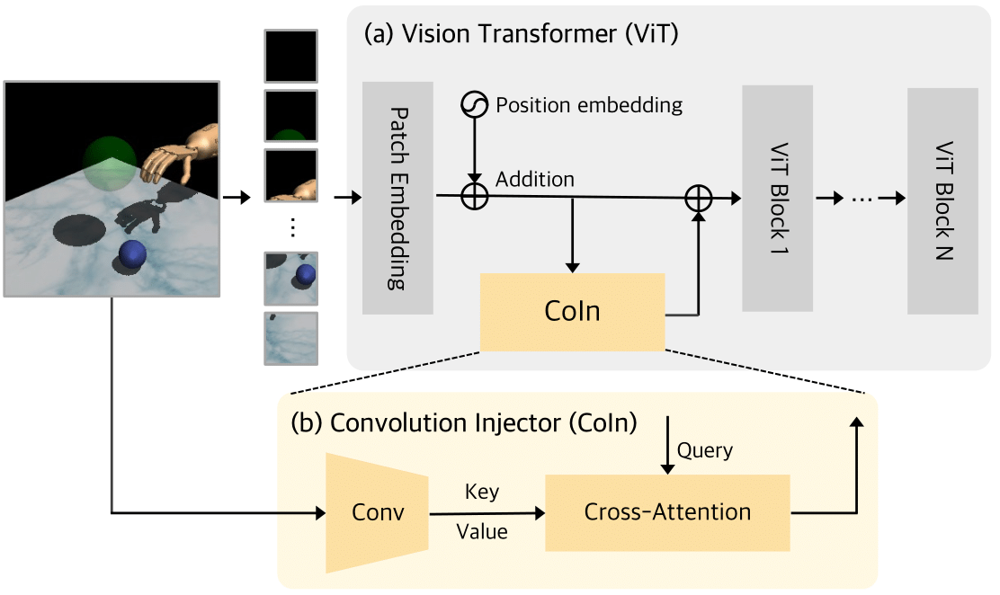
Dongyoon Hwang*, Byungkun Lee*, Hojoon Lee, Hyunseung Kim, Jaegul Choo. (* Equal contribution)
ICML'24.
project page / arXiv / code
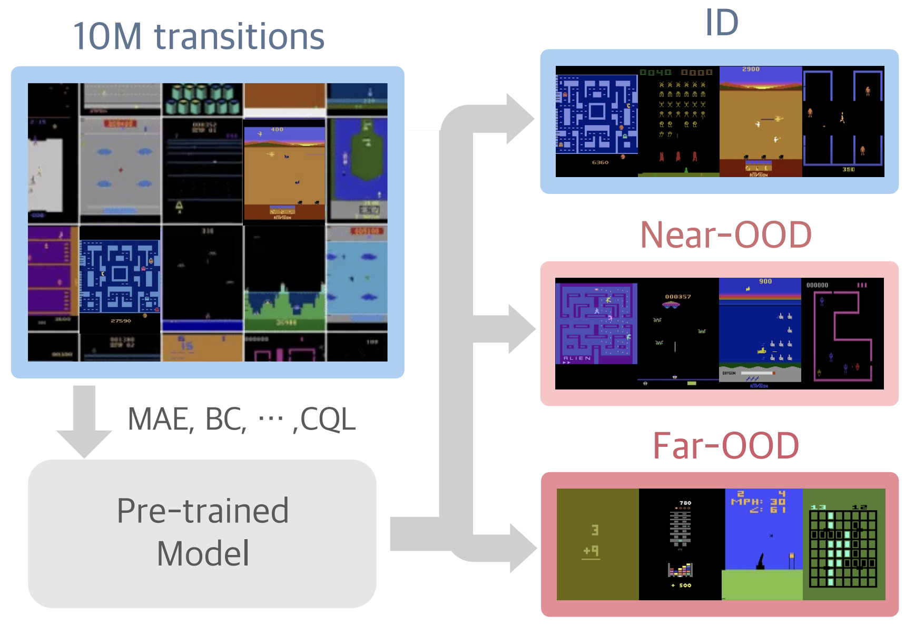
Donghu Kim*, Hojoon Lee*, Kyungmin Lee*, Dongyoon Hwang, Jaegul Choo. (* Equal contribution)
ICML'24.
project page / arXiv
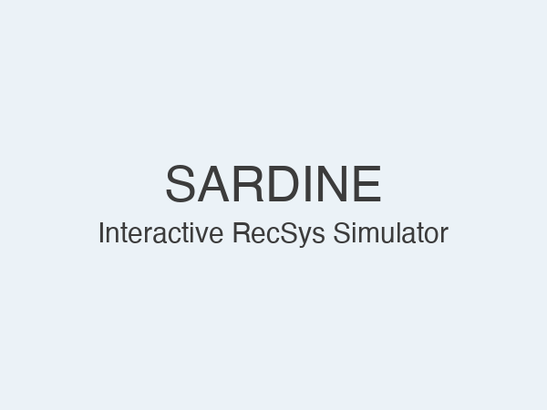

Hyunseung Kim*, Byungkun Lee*, Hojoon Lee, Dongyoon Hwang, Sejik Park, Kyushik Min, Jaegul Choo. (* Equal contribution)
NeurIPS'23.
project page / arXiv / code / Bibtex
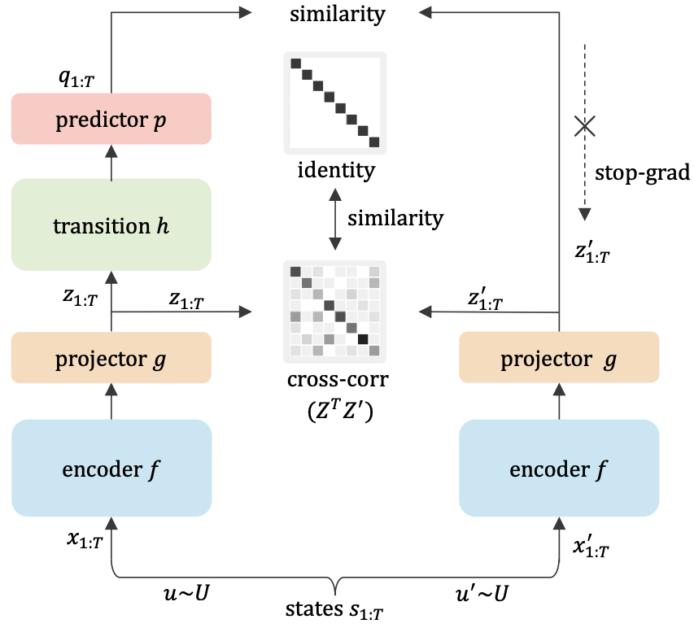
Hojoon Lee, Koanho Lee, Dongyoon Hwang, Hyunho Lee, Byungkun Lee, Jaegul Choo.
ICML'23.
arXiv / code / poster / Bibtex
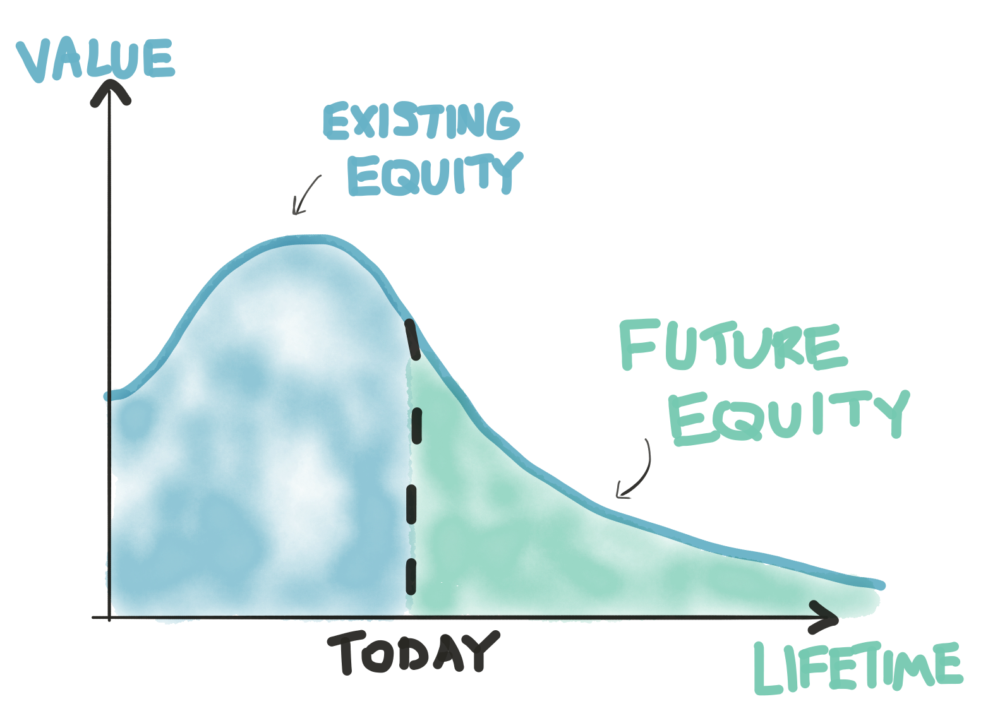
Hojoon Lee, Dongyoon Hwang, Kyushik Min, Jaegul Choo.
SIGIR'22 (short), Best Short Paper Honorable Mention.
paper / poster / Bibtex
Hojoon Lee*, Dongyoon Hwang*, Hyunseung Kim, Byungkun Lee, Jaegul Choo. (* Equal contribution)
WWW'22.
arXiv / code / poster / Bibtex
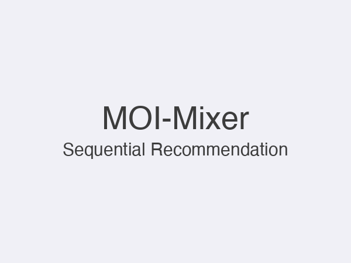
Hojoon Lee, Dongyoon Hwang, Sunghwan Hong, Changyeon Kim, Seungryong Kim, Jaegul Choo.
Preprint'21.
arXiv